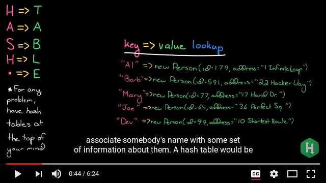

Bitcoin & Cryptocurrency Technologies, course note
Table of Contents
Week 1
Introduction & following this syllabus
{kind=link}
Cryptographic Hash Functions.
OK, let's start in slow mode though also in short, rather. As quick explained here (specially some foundation concepts as collision (when at indexing (3:55)) & chaining (key-data in slots (6:00))). So that given a data structure:

we can map it by implementing arrays which would associate key to values & we'll call out a hash function to its look up mechanism.
- A curios question arise about the idea of
collision-freehash arrays implementation (it's said that if you pick 2 to the 130 randomly chosen inputs from a possible hash group, there's a 99.8% chance that at least 2 of them collide, however this procedure takes 2 to the 130 steps in order to get that high possibility. So that "if every computer ever made by humanity were computing since the beginning of the entire universe up to now, the odds that they would have found a collision is still infinitesimally small." (OK, no more question, majesty ~~) - The hash function bitcoin uses the SHA-256 algorithm. Check out here for a kind of pen and paper explanation of the standard, & so helpful visualised here.
Hash Pointers and Data Structures 8 min
A (hash) pointer (a kind of data structure) (it's a ref to where some info is stored (so that, attaching a Cryptographic hash of info it turns out that, more than a regular pointer, it) tells us where something is and what it's value is.. yh.
- A key idea here: think of any data structure as a tree in which every leaf is part (in a hash of pointers or chain) to the its child node so that the hash itself allow efficient & secure verification (Merkle tree).
Digital Signatures 9 min
Well, I had to check some others tutorials to get the mechanism but only after re-reading the gnu/pg-key system I could get the point.
{kind=link}
- Though getting narrow on how-come from I got the point (importance which I noticed later) this pic grasps wide good the point (so, new subject point added to my list for learning more: Diffie-Hellman-Merkle key exchange)
{kind=link}
Public Keys as Identities 5 min
Ok, let's track the trick:
- The idea is to take a public key
pkand equate that to an identity (an identity of a person, or an act, or a system). - If you know the
sksecret key that correspond with that specific [identity|pk| act| or system, so (only) you can 'sign' messages on behalf of that itpk, those messages are essentially statements. Something that (only) one person can speak for or on behalf of, & (important) that everybody can see. - OK, what if you were able (& you are) to make a new identity whenever you want (just by creating a new random key pair
skandpk. Thatpk(or its hash) would be, then, the public name of that identity, a face in the crowd that only you can control & nobody needs to know about (which brings us to the idea of decentralised identity management. [This is the way Bitcoin in fact does identity, & these identities are called addresses in Bitcoin jargon].
A Simple Cryptocurrency 14 min
- GoofyCoin, the simplest crypto currency we can imagine (a uniqueCoinID, a digital signature which anyone can verify).
- Issues: The double-spending attack
- ScroogeCoin, let's say an improved currency, tackles the issue by including in the block chain the history of all the transactions that have happened.
- As extra reading & good summary I enjoyed to watch this ytb-clip
Programming Assignment:
Scrooge Coin3h
Overdue
Week 2
Week 3
Week 4
Week 5
Week 6
Week 7
Week 8
Week 9
Week 10
Week 11
Grades
Discussion Forums
Resources
Course Info Assignments Overdue: You can still pass! Remember, you need to pass these assignments before the course ends on February 18, 11:59 PM PST. This Week's Forum Week 1
Discuss and ask questions about Week 1. Introduction to Crypto and Cryptocurrencies Profile image for Arvind Narayanan
Arvind Narayanan
Learn about cryptographic building blocks ("primitives") and reason about their security. Work through how these primitives can be used to construct simple cryptocurrencies. Introduction to Crypto and Cryptocurrencies